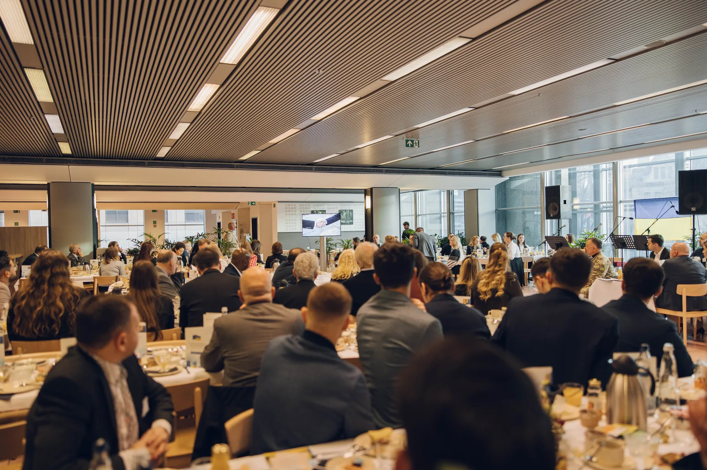

Формування нової суб'єктності
Мобілізація євангельської діаспори та побудова системного діалогу з європейськими інституціями.
Єднання задля відновлення Європи, захисту християнських цінностей та духовного відродження
До початку події залишилося
Форум розпочався
Масштабна міжнародна платформа, що об'єднує духовних лідерів, європарламентарів, урядовців, науковців та молодь України і Європи задля формування та утвердження цінностей віри та свободи в Європі.
Сучасна Європа проходить етап глибоких світоглядних та геополітичних трансформацій. Постають нові виклики, які спонукають нас шукати міцний духовний і моральний фундамент задля стабільності та миру.
Наша мета — створити відкритий простір для діалогу між українською та європейською християнськими спільнотами. Єднаючи досвід, цінності та зусилля, ми прагнемо разом розбудовувати партнерські зв'язки для духовного відновлення, взаємної підтримки та консолідації Європи.

Мобілізація євангельської діаспори та побудова системного діалогу з європейськими інституціями.
Відновлення суспільного діалогу на основі християнської спадщини, міцного інституту сім'ї та справжніх прав людини.
Залучення, навчання та розширення можливостей для нової генерації українських і європейських молодіжних лідерів.
Хронологічна програма за днями
У форумі беруть участь провідні духовні лідери, міжнародні аналітики, європарламентарі та державні діячі.
Координатор Національного руху молитовних сніданків, засновник аналітичного центру «Віра і Свобода», народний депутат двох скликань.
Всесвітньо відомий соціолог, мислитель, автор праць із питань свободи, віри та культури.
Керівник Центру європейських студій, дослідник християнської спадщини Європи.
Заступник голови Всеукраїнського союзу церков ЄХБ, керівник напрямку міжнародних зв'язків.
Founder / CEO Intercessors for Ukraine, Coordinator of the Global Prayer for Ukraine Initiative
Депутати Європейського парламенту, комісари Єврокомісії, українські можновладці, мери міст, представники Збройних Сил України, капелани та єпископи європейських церковних альянсів.
Фотозвіт з минулорічних форумів та Європейсько-Українських молитовних сніданків у Брюсселі.
Захід підтримується мережею всесвітніх та європейських християнських альянсів і громадських інституцій.
1–3 грудня 2026 року · м. Брюссель
Маєте запитання щодо участі, партнерства чи висвітлення події у ЗМІ? Напишіть нам, і ми зв'яжемося з Вами найближчим часом!